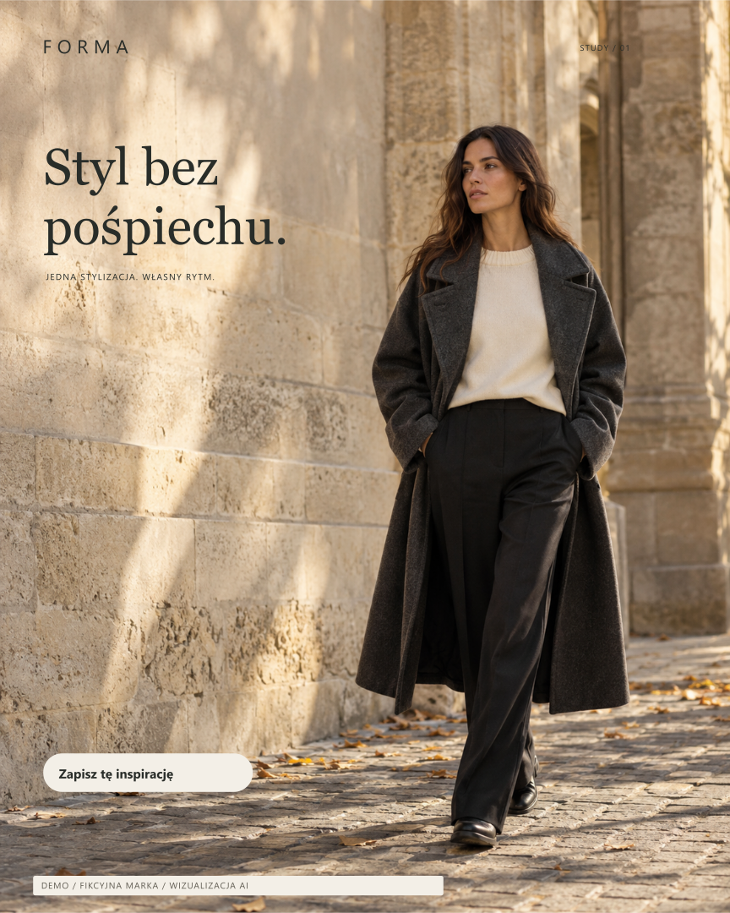
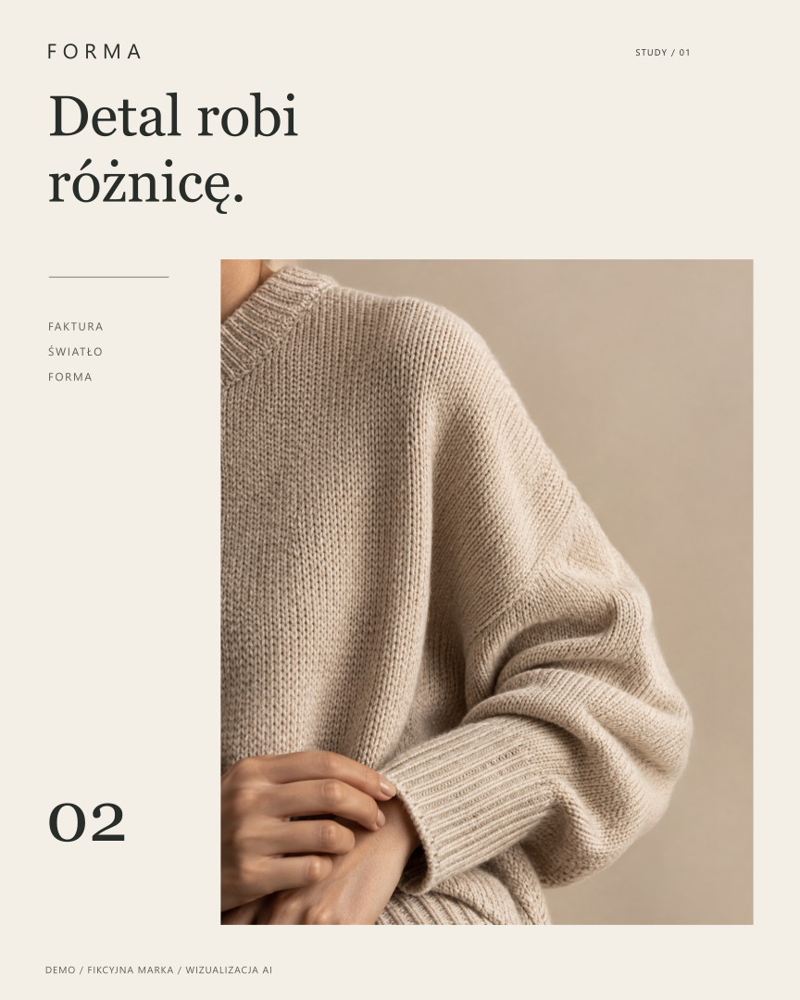

SOLID DIGITAL / FASHION CONCEPT
Spójny styl.
Trzy różne spojrzenia.
Próbka wizualnego kierunku dla fikcyjnej marki FORMA: sylwetka, detal i zestaw. Różne zdjęcia, kompozycje i hasła, połączone wspólną paletą oraz typografią.
Pobierz komplet: PNG, MP4 i źródłaWłasna demonstracja. Obrazy i ubrania są wizualizacjami AI, a marka jest fikcyjna. Materiał pokazuje warsztat; nie jest sesją prawdziwego produktu, historią prowadzenia profilu ani dowodem wyników.
Trzy posty, trzy role w feedzie

PNG 1080 × 1350Źródło SVG



PNG 1080 × 1350Źródło SVG


PNG 1080 × 1350Źródło SVG


Rolka 2D / 12 sekund / 9:16
Krótki hook, trzy czytelne kroki i spokojne wejścia typografii. Bez audio i bez pozorowania nagrania modela — to animacja warstw oryginalnych wizualizacji.
Pobierz MP4 1080 × 1920 · Przykładowe opisy postów · Zestaw promptów
Jak zastosować kierunek w prawdziwej marce
Pracę zaczynamy od Waszych oryginalnych zdjęć i nagrań, identyfikacji oraz ustalonej roli każdego materiału. AI może wspierać pomysły i otoczenie; rzeczywistego ubrania nie zastępujemy wymyślonym SKU. Potem ustalamy kalendarz, obieg akceptacji i kryteria oceny treści.